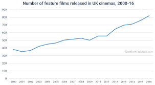
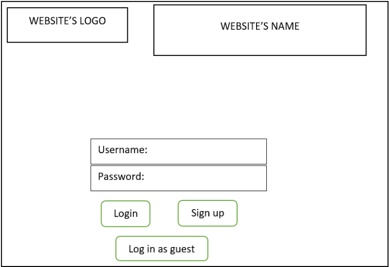

After the first assignment My Profile, our team chose the idea to create a movie sharing website. We will create a website named “Movie For You” to store ratings and reviews of movies based on the opinions of the user of this website. This website will be a good platform for movies lovers to share their reviews and opinions about their favorite movie.
With the growth of the movie streaming industry, the production rate of movies is increasing year by year.
Figure link:
We found out that there is an urge for a platform that can provide the user a place to exchange relatable review and opinion about the movie to each other. Here is an example of the number of movies released in UK alone through each year from 2000 to 2016.
Furthermore, as our group has agreed on, we have spent hours to browse through many long lists of movies to watch but we couldn’t ever find a movie that suited our taste because of the lack of description and review. Or in some cases, we would decide to watch a movie, but it turns out to be not as good as we expected.
First of all, after accessing our website, user will be meet with a login screen. The login screen will contain the website’s logo, the website’s name, 2 input fields for the user to input their account’s username and password, and 3 button “Login”, “Sign up”, “Login as a guest”. As the name of the 3 buttons suggested, each of them performs a task just like their name. If the user clicks on the login button after inputting the right username and password, they will be granted the access to the website. On the other hand, if their information is wrong and the server can’t validate the information, an error warning will pop up and require the user to resubmit the right Username or Password.
If the user hasn’t created any account yet and this is their first time visiting the website, they are highly recommended to create a new account and login into the website using that account. By clicking into the “Sign up” button, the user will be transit to a website for them to create an account. The user will be required to enter a Username and password for their new account.
Account signs up screen
The alternative option for the user to access our website without an account is that they can simply login as a guest. As a guest, user can access the website freely and browse through the list of movies and reviews, but aside from those, other activities will be restricted significantly, for example, guest account won’t be able to create comment about the movies and they won’t be able to save any movies into their Like list. To access the full features that the website provide, user will need to create an account and login using that account.
After logging in, the website will first display a list of the top-rated movies, along with a brief description of it. The description will include the movie’s title, description and ratings. Aside from displaying some information about the movie, their will also be a heart button displaying next to the description section. The user can click into that button to save that specific movie into their Like list. Furthermore, the user can hover the mouse onto the title of the movies to view more detail about the movie itself.
The website's main page
After clicking into the title, the website will automatically move to another page and view the full detail about the movie, such as the movie’s star actors, director, and publisher. Furthermore, the movie’s rating and review from the other user will also be recorded and display in this page after the user scroll down a bit. User can browse through lists of different categories of movies, the movies will be listed with the order based on the score of rating that it got from the website.
What will make this website special from others is an algorithm system implemented into the website that can recommend the user top rated and reviewed movie that match the user’s desired movie category. Moreover, to support the website’s algorithm, there will also be a function that allow them to mark a movie that they feel that they are interested with, the website will then run in through the algorithm and recommend suitable movies that can match the user’s taste.
To be able to create this website, there will be some usage of online tools and simple IDE. We planned to use visual studio code to write the front end for the website. Apart from them, there isn’t any external technologies needed. Since this is a team project, we will also utilize GitHub to push our code onto it for easy management. Since we are only creating a website, there won’t be hardware or other external equipment other than our personal computer is needed.
To be able to complete this project, there are many skills required from us developers. From personal skills to group working skills, each type of skills plays a big role in the success of the project. For example, each of the member need to have basic knowledge of web programming coding and be able to use GitHub to push and pull code for collaboration purpose. On the other hand, as for the teamwork skill, each member needs to be proactive and communicate with each other smoothly. Furthermore, having a sense of responsibility and be able to deliver their assigned work is also important in a group project.
After completing this website, We hope that many individuals like me can spend less time browsing and searching for a suitable movie to watch during their free times. Furthermore, the website will also create a free and spacious platform for movie lovers to share their opinions and guide other people which movies they should be investing their time in watching and which to avoid.